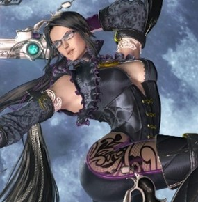

It was in the 1940s that the first video game, Nim, became prominent at New York’s World Fair. Decades later, in 1972, the Magnavox Odyssey was released to the public[1]. The 1980s saw the video game market explode with games striving to tell stories featuring characters & lives. But as this happened, a disparity grew between the representation of male and female characters. Iconic female characters of this era include Princess Peach, Zelda, or Ms. Pac-Man. The first playable female character is considered to be Samus Aran, of 1986’s Metroid[2]. In the following decade, Lara Croft took the stage as one of the first strong female leads. But don’t be fooled by this apparent utopia of female representation; every single one of the characters mentioned is riddled with glaringly obvious issues.
Video games are the most successful piece of entertainment ever[3]. It is imperative that they are accessible to all of humanity and that all of humanity is fairly represented within them. The fact that women are routinely sexualised, victimised, brutalised, and objectified[4] in games is completely unacceptable. In time, hopefully, these tropes will cease. But to determine the likelihood of this, one needs to look at how their portrayal has already changed throughout the brief lifetime of the video game industry thus far.

A 2009 study showed that only 10% of main protagonists in video games are female. Furthermore, only around 15% of all video game characters are female[4]. Even when a game does feature a female lead, this can often be done in inappropriate, insensitive, and sometimes ambiguous ways. Some games, such as Battlefield V, are accused of marketing their female lead in a performative way[5] that’s unsubstantiated by the game, whilst other games such as Mass Effect 3 are accused of the opposite; primarily advertising the male variant of the lead[6]. Whilst the former accusations were largely shrouded with sexism, it still shows the ambiguous and complex nature of proper representation.
One trope that hasn’t changed over time, is a ‘female copy’ of a male character. Characters from 1981’s Ms. Pacman to 2007’s Commander Shepard[7] represent a male character who has been changed subtly into a female variant. This characterisation strips the woman of her individuality and instead suggests her existence is dependent on her partner/brother/male-version. In more extreme cases, games such as Dinosaur Planet, which later became Star-Fox Adventures, have had a female lead completely written out of the game in favour of a male lead[8]. This could potentially have been done because of a Mary Sue fallacy, the fact that people tend to be accepting of a gifted, attractive & flawless male character but think the same for a female character is illogical[9].
All of this remains the case because the video game market is commonly perceived as male dominated. But these days, that couldn’t be further from the truth. Between 2005-2021, there has been a positive trend towards an equal ratio that now sits at a 54:46 ratio[10]. Despite this, the industry still acts as if it must cater primarily to men. Even in 2015, the E3 gaming convention featured 4 times as many male-centred games as female-centred ones with only a fifth the panellists presenting as female[11]. Meanwhile, women who are playing MMO games face colossal amounts of virtual violence and sexual abuse to the point where many choose to hide their gender or present as male in the game[4].
In a tale as old as time, the princess is stolen away by the big bad and awaits her rescue. Early video games such as Super Mario Bros or The Legend of Zelda were some of the first offenders of a trope that presents women as victims that are dependent on a male rescuer[6]. Both of these series continued to tell stories that pit the princess as a victim. And this trope has shown no sign of slowing down either. Merely 5 years ago, in 2017, both series received new instalments that featured the same basic premise. Both instalments feature a minimal effort at redemption as Princess Peach from Super Mario Odyssey soars away on her own in the climax[12] and Zelda from The Legend of Zelda: Breath of the Wild gives the hero a helping hand as he defeats the big bad[13]. Given this trope’s prevalence during the early stages of video games, modern games such as Spelunky try to justify its utilisation to create a ‘retro’ vibe.
The particularly insidious developers will have their victim experience violence from their captor. Sometimes, the woman is ‘fridged’, a term originating from a Green Lantern comic that refers to the killing of a captive woman[6]. Even though these characters are actual people that exist within the world of the video game, games’ stories present their death as a punishment enacted upon the male rather than the female. It’s a plot device that gives the male someone to avenge. This is part of a larger tendency for games to feature violence against women. And whilst many players may consider this plot to be one of emotional sophistication, it actually just normalises the behaviour in the minds of its players. Particularly bad offenders include the startling end to GTA3 as the main character, after having rescued the damsel, is implied to kill her as a repercussion for her femininity[6]. Another more glaring example is RapeLay, a game where the player’s goal is to rape a family of women[14].
The violence is even worse when directed at sex workers with games like Red Dead Redemption featuring an achievement for kidnapping a female sex worker and allowing her to be hit by a train[15]. Exposing impressionable minds to this isn’t just inappropriate, it’s irresponsible.
An incredibly common depiction of women in video games is the hyper-sexualised characters. This typically involves a skinny build, exaggerated breasts and buttocks, and sexually revealing attire[16]. A study has shown that 41% of female characters are dressed this way[4]. Furthermore, when trying to portray a female character gaining significant ‘power’, developers often choose to further sexualise her by dressing character’s such as Nintendo’s Bayonetta[6] in even more revealing clothing[14]. Exposure to these depictions can lead female players to feel lower self-efficacy and a significantly increased body dissatisfaction[14].
The first Lara Croft game featured the character in an incredibly scantily outfit[2]. And whilst further entries have replaced this with less revealing clothing[2], they have compensated with insidious use of camera angles[14]. When behind her, the camera position tends to specifically focus on the ‘appealing’ aspects to her figure[14]. This choice perfectly encapsulates the male gaze – a tendency for media to be presented through a male oriented lens. Other games such as Portal also allow the player-controlled camera to scan their female lead’s body[6]. Interestingly, there are often restrictions on how this camera movement can occur in a male-lead game.
Frequently, the sexualisation of female characters is presented as a reward for the player. This is the case for many of the Metroid games, which feature the main character – Samus – taking off more clothes depending on how quickly the player completed the game[17]. This is particularly unfortunate, because the inclusion of a powerful, female lead in such an early game could otherwise have been a progressive step towards video game equity.
In some stories, sexualisation is presented not to appeal to the audience but disgust them. Duke Nukem features scantily dressed women who have been ‘infected’. The hero’s only choice is to slay them in mass. The sequel to the game makes this even more problematic by presenting the characters as completely naked whilst still serving as the enemies you kill[6] – proving that in some cases, representation gets worse over time. Using ‘unattractive’ femininity to instil disgust is equally harmful as it perpetuates modern standards of beauty. When the player must ‘euthanise’ such characters it goes a step further to imply without their beauty, these characters are worthless.
Despite the innumerable sexist tropes throughout the video game industry, many things have, and continue to, change for the better. For example, the convenience and approachability of handheld gaming meant Nintendo’s DS exploded the scope of the video game market and led to many girl-gamers playing then female-dominated games such as Nintendogs or Animal Crossing[18] and the subsequent release of the pink DS, whose purpose was to further widen the female videogame market[18].
Furthermore, in 2012 feminist video game critic Anita Sarkeesian launched a Kickstarter to fund a series critical of sexist video game tropes which was met within 24 hours[4] because, according to the author, “people are increasingly getting sick of the sexist status quo”[15]. That said, this Kickstarter was met with intense online abuse including threats of rape and death towards Sarkeesian[4]. One notable sexist movement in the time since has been gamergate. It focussed again on Sarkeesian as well as other females within the game-making and game-journalism industry. Luckily, this 2014-15 movement was quite unsuccessful and, if anything, has only reinforced that there is decidedly an issue within the industry[11].
Of course, it’s not all bad news and not every game gets it wrong. Positive portrayals of a female desire for sex are present in 2016’s Firewatch[6] and characters such as Clementine from The Walking Dead have their femininity expressed not through weakness nor their body but instead through their facial structure and vocal intonation[16]. To further these positive changes throughout the rest of the industry, simply increasing the quantity of female characters won’t suffice[14], instead some from the Federal University of Santa Catarina have suggested that a character should not rely on their physicality to appeal to players, instead winning them over with personality or skills. Meanwhile, animations shouldn’t focus predominantly on movement of the breasts and buttocks and camera angles shouldn’t solely be highlighting ‘appealing’ parts of the body[16].
Based on everything mentioned throughout this article, it’s hard to establish whether video games have improved or gotten worse. The Metroid games got better whilst the Mario games remained stuck in the past. Many modern games employ positive female portrayals, meanwhile the 21st century has given rise to new tropes such as ‘retro’ sexism. People are far more aware of these issues but still play, on mass, some of the biggest offenders such as Grand Theft Auto. And whilst video games are played by women more than ever, too many of them have to hide this to avoid in-game abuse. The video game industry is big, and complicated and representation within it will never be easily categorised as ‘improving’ or ‘worsening’, but with enough focus on resolving the sexist tropes of past, video games can be an exciting and nuanced medium to be enjoyed by every gender.
[1] R Chikhani, The History of Gaming: An Evolving Community, Tech Crunch
[2] K Harveston, A Brief History of Female Representation in Video Games, Head Stuff
[3] A Kamentez, Why Video Games Succeed Where the Movie and Music Industries Fail, Fast Company
[4] C Heeter, Femininity in Video Games, The Routledge Companion to Videogame Studies, pp.392-399
[5] M Farokhmanesh, EA on the backlash against women in Battlefield V, The Verge
[6] A Sarkeesian, Tropes VS Women in Video Games, Youtube
[7] M Farokhmanesh, Tropes vs Women in Video Games examines ‘Ms. Male’ Character, Polygon
[8] C Welch, Rare’s unreleased N64 game Dinosaur Planet has leaked, The Verge
[9] C Walker, A Conversation with Paula Smith, Transformative Works & Cultures
[10] C Hughes, Share of female game plays Australia 2005-2021, Statista
[11] C Petit & A Sarkeesian, Female Representation in Videogames Isn’t Getting Any Better, WIRED
[12] R Duwell, What’s really wrong with Super Mario Odyssey’s controversial ending, Techno Buffalo
[13] N Spicer, The legend of the damsel in distress: Zelda and feminism in video games, Fan Girl
[14] A Danylova, Gender Struggles: Female Representation in Video Games, Inkspire
[15] S Rohwer, How sexism in video games furthers violence against women, Daily Dot
[16] C Bristot, Female Representation in Video Games, CLEI Electronic Journal
[17] J Rouner, Why Entitled Male Gamers Can’t Stand Critiques of Samus Aran, Houston Press
[18] J Jorden, How DS created a new generation of girl gamers, Pocket Gamer